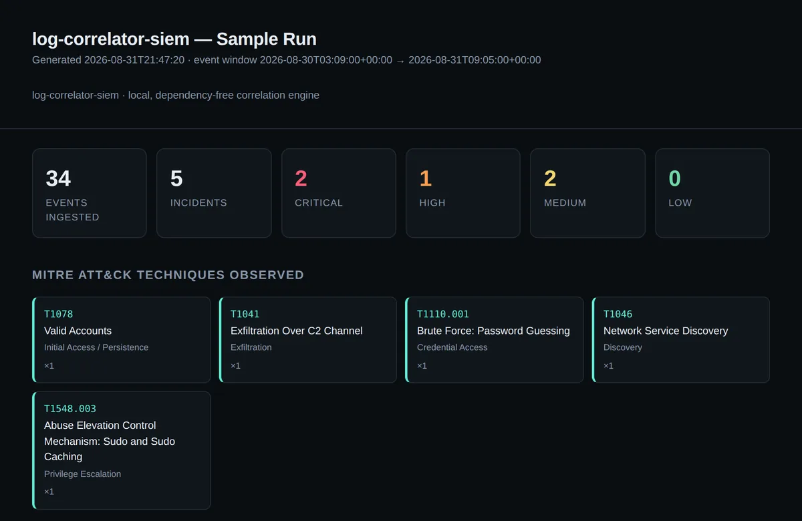
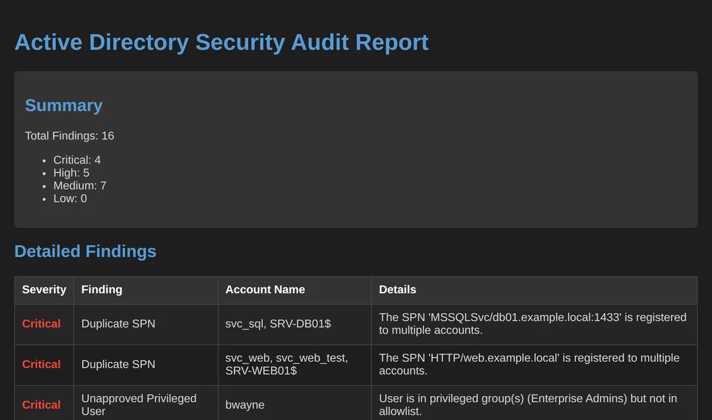
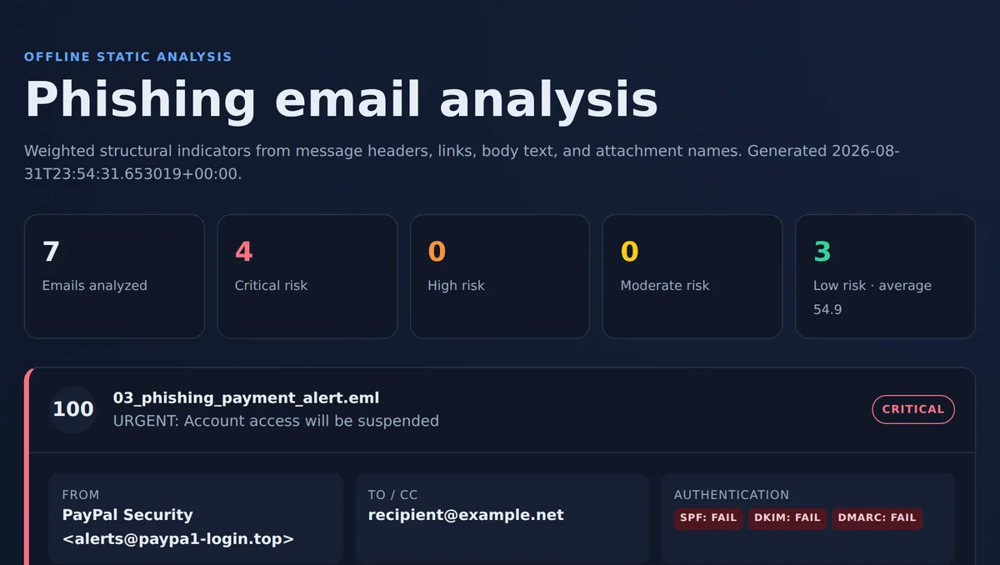

Open to new opportunities • Philadelphia / South Jersey metro • local time
Active Directory & Endpoint Management · IT Operations · Applied Security
Five-plus years of hands-on IT operations across military healthcare and civilian environments: Active Directory administration, endpoint imaging for 150+ systems, and 1,000+ resolved tickets a year. I build and document real automation and detection tooling outside of work to turn that operations experience into applied security skill.
Why this exists
I didn't learn security from a classroom first. I learned it from locked-out accounts, endpoint fleets that had to come back online, and a ticket queue that never really closes. Every tool on this site exists because the operations work taught me the problem before cybersecurity gave me the language for it.
About
I administer Active Directory for a secure medical network: user provisioning, account unlocks, and Group Policy enforcement. I reimage and deploy fleets of endpoints with SmartDeploy and PXE Boot, and resolve 12 to 15 Level 2 support tickets a day.
Outside of work, I build the tools I wish existed on the job: an AD and endpoint automation toolkit, a Windows event log threat hunter, a helpdesk analytics engine. Each one is real, tested, and documented, built to turn infrastructure experience into applied security skill rather than certificates alone.
I completed a B.S. in Computer Science with a Cybersecurity focus in May 2026 and I'm looking to grow from systems administration into security-adjacent infrastructure or junior security engineering roles, based in the Philadelphia and South Jersey metro or fully remote.
Experience
Projects
Real, working, tested, and documented. Pick one.

02 Log Correlator SIEM View project → HD 03 Helpdesk Ticket Analytics View project →
04 AD Security Auditor View project →
05 Phishing Email Analyzer View project → JR 06 JotRelay View project → EP 07 AD & Endpoint Automation Toolkit View project → WL 08 WinLog Threat Hunter View project →Also on this site
Static, single-file, hand-built. The WebGL network in the hero above is the same three.js engine as the diploma project.
No framework, no build step, no bundler: one HTML file carrying its own CSS and JS, deployed straight to GitHub Pages. Every background effect on this page, the hero network, the education seals, is hand-rolled canvas or CSS rather than a library.
Everything else here solves a problem nobody outside IT ever sees. This one didn't need to exist: a full 3D, physically-lit recreation of my actual Liberty University diploma, procedural paper and card materials, studio lighting, a folder that opens on drag. Built because the three.js engine idling in the hero above deserved a real object to render, not just a wireframe backdrop. It's live. Drag it.
Most portfolio "SIEM" projects flag one log line at a time. This one correlates sequences of events across two different log sources: a burst of failed SSH logins immediately followed by a successful one from the same IP is treated as one escalated incident, not two unrelated alerts, mirroring how a real detection-engineering rule chain works. Five rules, each mapped to a MITRE ATT&CK technique ID; zero runtime dependencies; renders as a self-contained HTML dashboard with no build step.
I don't have a live SOC seat yet, so I couldn't point to a real correlation rule I'd shipped. This was my way of proving the thinking anyway: don't just flag a suspicious line, chain it to what came before it, the way an actual detection engineer reads a timeline. If I can't show the seat, I can show the reasoning.
Live chart from the tool's own inline-SVG report generator, rendered from a 620-ticket sample dataset. No image file.
Turns a raw ticket export into SLA compliance, resolution-time, and volume metrics, mirroring real high-volume ticket queue work (1,000+ tickets/year). Zero dependencies; renders its own charts as inline SVG.
Twelve to fifteen tickets a day adds up to thousands a year, and I kept asking the same question nobody was answering: which priority tier is actually missing SLA, and by how much? This is that answer, generated in seconds instead of guessed at.
Audits Active Directory security posture entirely offline, from exported CSV data: stale accounts, password hygiene, unapproved privileged-group membership, outdated OS versions, and duplicate SPNs. No live domain connection required. Renders a dark-themed HTML report plus CSV/JSON export.
I administer a real production AD environment, so I know exactly how easy it is for a stale account or a privileged-group change to go unnoticed. I wanted an audit I could hand to anyone without touching the live domain: export, run, read the findings.
Statically analyzes raw .eml files for phishing indicators: SPF/DKIM/DMARC failures, lookalike and homoglyph domains, link-text/href mismatches, urgency language, and double-extension executables. Weighted score with plain-language explanations. Fully offline, never visits links or executes attachments.
Phishing reports land in every help desk queue, and "just don't click it" isn't an explanation. I wanted something that shows its work: which header failed, which domain is spoofed, in plain language, so the answer teaches the reader something instead of just flagging risk.
Real-time encrypted collaborative notepad: shareable editable or read-only links, QR codes, presence and typing indicators, offline drafts, and a PWA install with an OS-level share target. Vanilla JS, no framework or build step.
Everything else here is backend tooling nobody outside IT ever sees. I wanted to prove I can also ship something a stranger opens, understands in five seconds, and actually wants to use, encryption included, because "real-time" and "private" shouldn't be a trade-off.
Scanning 214 enabled accounts for LastLogonTimestamp older than 90 days... What if: Performing the operation "Disable AD Account" on target "jsmith (OU=Sales,DC=corp,DC=local)". What if: Performing the operation "Disable AD Account" on target "r.chen (OU=Support,DC=corp,DC=local)". ... 10 more, see report ... 12 accounts flagged inactive · 0 disabled (-ReportOnly) · report written to reports\inactive-2026-08-31.csv
Representative -WhatIf/-ReportOnly console output, formatted to match the script's real logging module. It targets a live AD domain, so this isn't a hosted demo.
Scripts for AD user provisioning/offboarding, stale-account cleanup, hygiene reporting, and endpoint compliance audits. Every write action supports -WhatIf; every run produces a log and CSV report.
Provisioning and offboarding by hand is repetitive, which means it's exactly where mistakes happen. Every write action here defaults to -WhatIf first, because I wanted automation I'd actually trust against a real domain, not a script that just moves the risk somewhere less visible.
WinLog Threat Hunter : analyzed 9 events, 3 finding(s) CRITICAL: 2 HIGH: 1 [CRITICAL] Repeated failed logons (brute force / password spray), followed by success rule: BRUTE-001 · mitre: T1110 · who: WIN-VPN01 / 45.33.12.7 7 failed logons in 6 min, then a success from the same source: likely compromise, not a blocked attempt. [HIGH] Special privileges assigned following a notable interactive logon rule: PRIVESC-001 · mitre: T1078 · who: svc_backup / WIN-VPN01
Real output from the tool, run against its own bundled sample_logs/brute_force_attack.jsonl dataset, not staged.
Parses exported Windows Security/Sysmon events and flags brute-force logons, privilege escalation, suspicious command lines, and admin-persistence patterns, each mapped to a MITRE ATT&CK technique.
Raw Windows Security logs are enormous and mostly noise. I wanted practice turning that noise into named attacker behavior, mapped to ATT&CK and not just "suspicious event #4471", because that translation is most of what a threat hunter actually does.
Skills
Education & Certifications